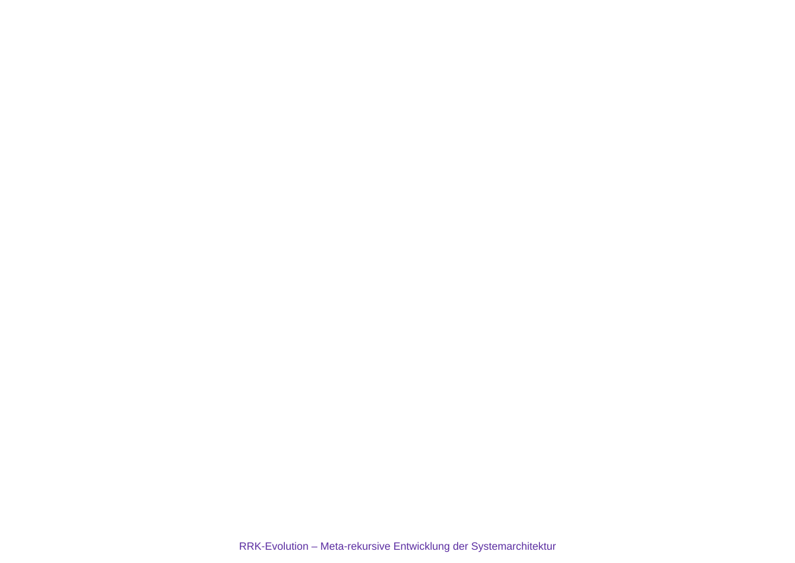

RRK‑Evolution – Versionsgeschichte des RRK‑Frameworks
Vom Strukturentwurf zur stabilen Theorie und Meta‑Rekursion
1. Zweck der Seite
Diese Seite dokumentiert die Entwicklung des RRK‑Frameworks als rekursive Theoriegeschichte. Sie zeigt, wie sich RRK von frühen Strukturentwürfen (2.x) über erste rekursive Modelle (3.0) hin zur stabilen Vierphasenstruktur (4.4) und zur meta‑rekursiven Abstraktion (5.0) entwickelt.
2. Überblick: RRK‑Versionen
- RRK 2.0–2.2: frühe Strukturentwürfe politischer Transformation
- RRK 3.0: Einführung rekursiver Systemperspektiven
- RRK 4.0–4.3: Ausarbeitung des vierphasigen Transformationsmodells
- RRK 4.4: erste vollständig stabile, minimal vollständige Strukturversion
- RRK 5.0: Meta‑Ebene: universelle Struktureigenschaften rekursiver Systeme
3. Diagramm der RRK‑Evolution
Das folgende Diagramm visualisiert die Entwicklung des RRK‑Frameworks als rekursiven Versionsprozess. Es zeigt, wie Variation, Selektion und Retention über Versionen hinweg wirken.

4. Rekursive Theoriegenese
Die RRK‑Evolution ist selbst rekursiv: Jede Version erzeugt die Bedingungen für die nächste. Frühere Versionen dienen als Variation, spätere Versionen selektieren stabile Strukturelemente. Version 4.4 markiert den Punkt, an dem das Modell minimal vollständig wird; Version 5.0 abstrahiert diese Struktur auf eine universelle Ebene rekursiver Systeme.
5. RRK als dokumentiertes wissenschaftliches Artefakt
Die Versionierung macht RRK zu einem explizit dokumentierten wissenschaftlichen Artefakt. Die Abfolge 2.0 → 3.0 → 4.0–4.4 → 5.0 ist nicht nur historisch, sondern theoretisch relevant: Sie zeigt, wie rekursive Strukturmodelle selbst rekursiv entstehen.